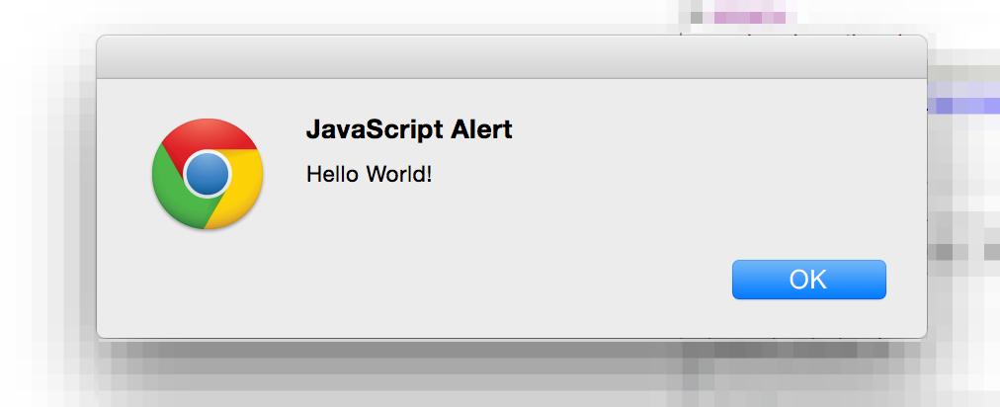

Get your hands on Webpack
You can write a ReactJS app using good ol' ES5 syntax and few polyfills. You can just dump files in your browser and load the page to see your HelloWorld working. But this is not going to be efficient nor sustainable, not in the long run.
ReactJS is a library designed to build rich applications, unlike jQuery it is not meant to enrich an existing web page with some plugins, with React
In this chapter you go beyond the normal Javascript browser scripting. You are going to use Webpack to build your application's bundle from some well structured Javascript source files. This actions is called transpiling and I give you some good arguments why you want do that:
- each of your source files will be small therefore extremely easy to read
- you can use edge language features that are not yet available to the browsers (like arrow functions and promises)
- you can structure your app with different folders and meaningful naming conventions so to reduce the needs for documentation
Install Webpack
Webpack is available through NPM and it provides a quite easy to use command line tool that will make a breeze to transpile a basic application.
npm install -g webpack
Click here for the official documentation »
Setup a new project!
Here I really want to skip the basics. Let's take an easy example that already leverages NodeJS' modularity to write a structured Javascript application. Of course the outcome will be an HelloWorld app!

So let's start building some basic files!
This is a very basic lesson so we'll spend quite a lot of efforts explaining which role each file plays within the application structure. Later of our app will grow in number of files and we'll introduce few more specific roles, still the following roles are the most important concepts you must understand very deeply
You can download the complete source code of the following example here.
index.html
This is the HTML entry point of our App.
<!DOCTYPE html>
<html>
<head>
<title>TodoApp</title>
</head>
<body>
<h1>Hello World</h1>
<script src="build/index.js"></script>
</body>
</html>
src/index.js
This is the Javascript entry point of our App.
In this file we write all the initialization instructions and we require external modules to delegate complex logic.
var greet = require('./greet');
greet('ReactJS');
The
require()function comes from NodeJS and allows to split a big application into simple modules. Today's browsers don't understand it (they will) and that's why we need tools like Webpack (or Browserify) to generate a browser-executable Javascript file from our source code.
src/greet.js
This is a Javascript module and plays a foundamental role in your application architecture. A module is just a library of functions that are exposed via module.exports or export.methodName symbols.
Our simple module will expose a single function that is used by the Javascript entry point to greet the user. There is not much logic involved but the point is well proven.
module.exports = function(str) {
alert(['Hello ', str, '!'].join(''));
};
Build Time!
You may hace noticed that in out index.html we refer to build/index.js which we haven't created. Well, that's because Webpack will generate this file using src/index.js as entry point for our app's bundle:
webpack src/index.js build/index.js
Now it's your turn!
Try to add some more modules to your application.
Remember those simple principles:
- a module can require other modules
- a module can export more than one method
- a module can export every type (strings, numbers, ...)
Download the complete source code of the following example here and keep experimenting with it!